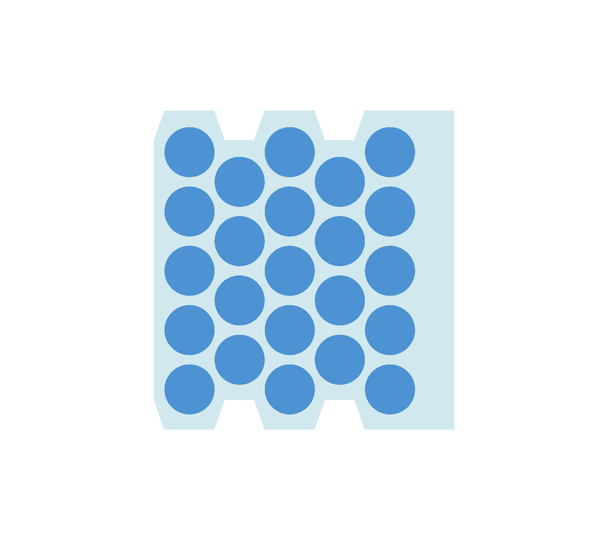
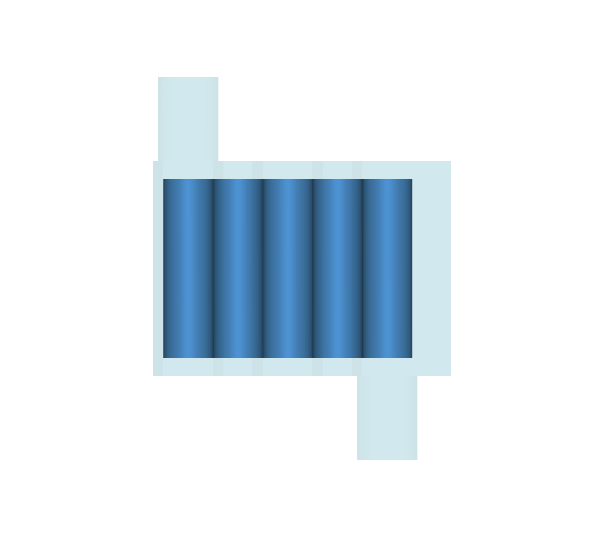

YU FLUID
CALCULATED CAD · ORTHOGRAPHIC VIEWS
← 처음으로
CFD 결과
메시 보기
한국어
English
최종 계산 형상
CAD 상면도 · 측면도
결과 선택
탱크 114 × 121 × 82 mm
배터리 23개 · Ø19 × 68 mm
배열 5–4–5–4–5
포트 Ø23 × 32 mm
XY PLANE
상면도
도면 저장 ↧
실제 CAD 투영 이미지

XZ PLANE
측면도
도면 저장 ↧
실제 CAD 투영 이미지
